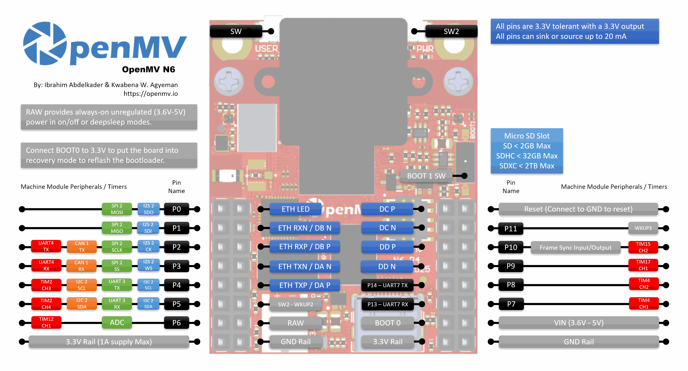

OpenMV N6¶
OpenMV N6 基于 STMicroelectronics STM32N657（Cortex‑M55 @ 800 MHz）打造，搭载 INT8 算力达 600 GOPS 的 1 GHz 片上 NPU。该开发板将 NPU 与可拆卸载板上的 PAG7936 1 MP 全局快门传感器、千兆以太网、USB‑C 高速接口、Wi‑Fi 以及 Bluetooth 5.1 相结合，能够以 30 FPS 运行 YOLOv8/YOLOv11 推理，同时进行实时视频流传输。

完整的数据手册、照片和尺寸信息请参见 OpenMV N6 产品页面。
亮点¶
STM32N657 Cortex‑M55，主频 800 MHz（1280 DMIPS），配备 ARM Helium 128 位 SIMD —— 6.4 gigaops 向量吞吐量。
1 GHz NPU，600 GOPS INT8 —— 以 30 FPS 运行 YOLOv8/YOLOv11 检测。
ISP 支持最高 5MP RAW Bayer，2D GPU 用于缩放和 3D 旋转，H.264 编码最高 1080p，以及硬件 JPEG 编解码器。
64 MB 外部 SDRAM（16 位 @ 200 MHz DDR，800 MB/s），外加 4.2 MB 内部 SRAM 和 32 MB 八线闪存（200 MHz DDR，400 MB/s）。
PAG7936 1 MP 彩色全局快门传感器。
板载 IMU（加速度计 + 陀螺仪）和麦克风，可实现音频 + 运动融合。
高速 USB‑C（480 Mb/s，1.5 A 电流限制）、千兆以太网（通过扩展板可支持 PoE）、Wi‑Fi a/b/g/n + Bluetooth 5.1（可选芯片天线或 U.FL）。
microSD 插槽 —— SD 最高 2 GB，SDHC 最高 32 GB，SDXC 最高 2 TB。
LiPo 充电器（500 mA 快速充电）、电池电压 ADC、带 8 KB 备份 RAM 的 RTC 以及专用的备份电池引脚。
18 个 I/O 引脚，全部为 3.3 V 输出 / 3.3 V 耐受，每个引脚 20 mA，支持中断。
用户 RGB LED、用户按钮，以及一个用于充电 / USB / VIN 电源指示的独立状态 LED。
警告
N6 的 I/O 引脚不耐受 5 V。请勿将设备直接连接到 Arduino Mega 等 5 V MCU。请仅通过 VIN 为 N6 供电。
引脚分布¶
{kind=link}

引脚参考¶
引脚名称 |
功能 |
|---|---|
P0 |
SPI2 MOSI / I2S2 SDO |
P1 |
SPI2 MISO / I2S2 SDI |
P2 |
SPI2 SCLK / UART4 TX / CAN1 TX / I2S2 CK |
P3 |
SPI2 SS / UART4 RX / CAN1 RX / I2S2 WS |
P4 |
I2C2 SCL / UART3 TX / TIM2 CH3 / I3C2 SCL |
P5 |
I2C2 SDA / UART3 RX / TIM2 CH4 / I3C2 SDA |
P6 |
TIM12 CH1（此引脚无 ADC —— 参见 |
P6_ADC |
专用 12 位 ADC 输入（内部连接到 P6） |
P7 |
TIM4 CH1 |
P8 |
TIM4 CH2 |
P9 |
TIM17 CH1 |
P10 |
TIM15 CH2 / 帧同步 I/O |
P11 |
唤醒（低电平有效，WKUP3） |
P12 |
RESET —— 拉至 GND 可复位开发板（非 GPIO） |
P13 |
UART7 RX |
P14 |
UART7 TX |
P15 |
SPI4 CS |
P16 |
SPI4 SCK |
P17 |
SPI4 MISO |
P18 |
SPI4 MOSI |
SW |
用户按钮（低电平有效） |
ONOFF (SW2) |
深度睡眠唤醒按钮（低电平有效，WKUP2） |
ST |
VIN 供电时为低电平，USB 供电时为高电平 |
CHG |
低电平有效；当所连接的 LiPo 电池正在充电时为低电平 |
PG |
低电平有效；当存在 VIN 或 USB 电源时为低电平 |
BAT_ADC |
用于测量所连接 LiPo 电池电压的内部 ADC 通道 |
LED_RED |
RGB LED 红色通道（低电平有效） |
LED_GREEN |
RGB LED 绿色通道（低电平有效） |
LED_BLUE |
RGB LED 蓝色通道（低电平有效） |
备注
P10 帧同步线是一条共享总线。 它同时连接到 MCU、摄像头传感器的触发 / 曝光引脚以及用户排针。方向由应用程序定义 —— 根据传感器的配置方式，可由 MCU、传感器或外部信号来驱动它（某些传感器可将同一引脚用作触发输入或曝光输出）。请确保任意时刻只有一个驱动源处于活动状态。
备注
ONOFF 和 P11 以常通 RAW 电源轨为参考（而非受控的 3.3 V 电源轨），因此当开发板其余部分处于深度睡眠 / 低功耗模式时，它们仍可正常工作。两个输入均为低电平有效。
这些引脚经过电平转换器，因而可以挂在 RAW 电源轨上工作。如果你确实需要 ONOFF 或 P11 表现出 3.3 V 直连 GPIO 的行为（例如不经电平转换器而由 3.3 V MCU 直接驱动它们），开发板提供了上拉和 0 欧姆跳线焊盘，可绕过电平转换器。这属于高级硬件改造 —— 大多数用户应保持原样不动。
备注
P15–P18 与千兆以太网 PHY 共用，后者默认已连接并处于活动状态。要将这些引脚用作用户 I/O，必须将开发板背面的 0 欧姆电阻回流焊接到 GPIO 位置。这样做仅会禁用千兆以太网 —— 10/100 Mb/s 以太网仍可在其专用引脚上正常工作。
电源引脚¶
3.3V —— 稳压后的 3.3 V 电源轨。在 N6 上仅为输出 —— 请勿向此引脚馈入外部电源。可为扩展板提供最高 1 A 电流。
VIN —— 5 V 输入。为开发板和板载 LiPo 充电器供电。
RAW —— 输入/输出，常通（3.6 V – 5 V）。承载当前活动的电源（VIN、USB 或所连接的电池），也可用作输入。向 RAW 馈入电源时必须经过一个串联二极管 —— 否则电流会回灌至 VIN/USB，损坏电源或板载保护电路。
GND —— 公共地。
备注
板载电源管理芯片会自动选择 USB 或 VIN 中电压较高者为开发板和电池充电器供电。如果连接了 LiPo 电池，它会利用剩余电量裕度进行充电；当 VIN/USB 电压下降或被拔出时，控制器会切换到电池以保持开发板运行。
备注
开发板背面有用于外接 3.3 V RTC 备份电池的焊盘。将一枚纽扣电池焊接到这些焊盘上，可在开发板其余部分断电时保持 RTC 和 8 KB 备份 RAM 运行。
小技巧
使用 电池续航估算器 可以估算 N6 在给定的活动 / 深度睡眠占空比下，依靠电池能运行多久。
以太网引脚¶
N6 在 GPIO 排针旁的专用焊盘上引出了以太网 PHY 的 MDI 差分对。MDI 引脚不能直接连到 RJ45 —— PHY 与线缆之间必须接入以太网磁性元件（隔离变压器，可内置于 magjack 中或位于扩展板上）。OpenMV PoE 扩展板已包含这些元件；如果你自行制作插座，请使用集成磁性元件的 RJ45 或外接变压器。
ETH_LED —— 链路/活动 LED。链路连通时为低电平有效；有流量时闪烁。
DA P / DA N —— A 对（10/100 中的 TX，所有速率均使用）。
DB P / DB N —— B 对（10/100 中的 RX，所有速率均使用）。
DC P / DC N —— C 对，仅在千兆速率下使用。
DD P / DD N —— D 对，仅在千兆速率下使用。
10/100 Mb/s 仅需 A 对和 B 对。千兆需要全部四对 A–D。
恢复与调试引脚¶
RESET —— 拉至 GND 可复位开发板。释放后 MCU 会正常启动。
BOOT0 —— 在为开发板上电时拉至 3.3 V，可进入 ROM 引导加载程序模式。OpenMV IDE 使用此模式来重刷板载引导加载程序。
BOOT1 —— 该开关可将开发板置于开发者模式，以配合 ST 的工具链使用（通过连接到 ARM 10 针 SWD/JTAG 排针的 ST‑LINK）。在使用 OpenMV 固件和工具进行正常操作时请保持禁用。
开发板配有专用的 ARM 10 针 SWD/JTAG 排针，兼容 ST‑LINK 和 SEGGER J‑Link 适配器。
板载外设¶
LED¶
N6 配有两个 RGB LED：
用户 RGB LED —— 可由软件控制，引出为
LED_RED、LED_GREEN和LED_BLUE:from machine import LED LED("LED_RED").on() LED("LED_GREEN").on() LED("LED_BLUE").on()
电源 LED —— 由板载电源管理硬件直接驱动，无软件控制。可用它一眼看出电源的工作状态。
运行时：
通道
含义
蓝色
VIN 正在为开发板供电（USB 供电时熄灭）
绿色
存在 USB 或 VIN 电源
红色
正在为所连接的 LiPo 电池充电
在深度睡眠中，所有通道均熄灭，红色除外 —— 当 LiPo 正在充电时它仍会点亮。
电源状态引脚¶
三个低电平有效的状态输入可让固件了解板载电源管理芯片的工作状态：
ST —— 开发板由 VIN 供电时为低电平，由 USB 供电时为高电平。
CHG —— 当所连接的 LiPo 电池正在充电时为低电平。
PG —— 存在 VIN 或 USB 电源时为低电平。
from machine import Pin
on_vin = not Pin("ST", Pin.IN).value()
charging = not Pin("CHG", Pin.IN).value()
power_ok = not Pin("PG", Pin.IN).value()
摄像头传感器¶
PAG7936 通过 csi --- 摄像头传感器 模块驱动:
import csi
cam = csi.CSI()
cam.reset()
cam.pixformat(csi.RGB565)
cam.framesize(csi.HD) # 1280×800
cam.snapshot(time=2000) # let auto‑exposure settle
while True:
img = cam.snapshot()
传感器位于一个可拆卸模块上 —— 可将其更换为任何其他 OpenMV 摄像头模块（全局快门、热成像、更高分辨率等），而无需改动开发板的其余部分。
PAG7936 支持触发模式 —— 像素积分会与每次 csi.CSI.snapshot 调用精确对齐，而非跟随自由运行的帧时钟，这对于将采集与外部事件或另一个传感器同步很有用。可通过 csi.CSI.ioctl 配合 csi.IOCTL_SET_TRIGGERED_MODE 启用它。由于读出不再与下一帧的积分流水线化，帧率会降至大约自由运行模式的一半:
cam.ioctl(csi.IOCTL_SET_TRIGGERED_MODE, True)
NPU¶
N6 的 1 GHz Neural‑ART NPU（600 GOPS INT8）通过 ml --- 机器学习 模块对外提供。存储在只读 /rom 文件系统上的模型会直接从闪存加载，无需复制到 RAM，因此即使是大型检测器也能与实时帧缓冲区一同舒适地容纳。下面在每一帧上运行 YOLOv8 检测器并将预测结果绘制在实时图像之上:
import csi
import time
import ml
from ml.postprocessing.ultralytics import YoloV8
# Initialize the sensor.
csi0 = csi.CSI()
csi0.reset()
csi0.pixformat(csi.RGB565)
csi0.framesize(csi.VGA)
# Load YOLO V8 model from ROM FS.
model = ml.Model("/rom/yolov8n_192.tflite", postprocess=YoloV8(threshold=0.4))
print(model)
# Visualization parameters.
n = len(model.labels)
model_class_colors = [
(int(255 * i // n), int(255 * (n - i - 1) // n), 255)
for i in range(n)
]
clock = time.clock()
while True:
clock.tick()
img = csi0.snapshot()
# boxes is a list of list per class of ((x, y, w, h), score) tuples
boxes = model.predict([img])
# Draw bounding boxes around the detected objects
for i, class_detections in enumerate(boxes):
rects = [r for r, score in class_detections]
labels = [model.labels[i] for j in range(len(rects))]
colors = [model_class_colors[i] for j in range(len(rects))]
ml.utils.draw_predictions(img, rects, labels, colors, format=None)
print(clock.fps(), "fps")
麦克风¶
板载麦克风通过 audio --- 音频模块 进行采集。每个缓冲区以有符号 16 位 PCM bytearray 的形式到达，这使得将其馈入 ulab/numpy 进行快速 DSP 变得非常简单。下面是一个简单的响度检测器 —— 每当 RMS 音量越过阈值时打印:
import audio
from ulab import numpy as np
def loudness(pcmbuf):
samples = np.array(np.frombuffer(pcmbuf, dtype=np.int16), dtype=np.float)
rms = np.sqrt(np.mean(samples ** 2))
if rms > 10000:
print("Loud!", int(rms))
audio.init(channels=1, frequency=16000, gain_db=24)
audio.start_streaming(loudness)
while True:
pass
IMU¶
摄像头模块下方的板载加速度计 + 陀螺仪通过 imu --- imu 传感器 对外提供:
import imu
import time
while True:
print(imu.acceleration_mg()) # (x, y, z) in milli‑g
print(imu.angular_rate_mdps()) # (x, y, z) in milli‑deg/s
time.sleep_ms(100)
Wi‑Fi¶
板载 CYW43439 通过 network --- 网络配置 以站点接口形式对外提供。连接后，ipconfig("addr4") 返回 (ip, netmask) 二元组:
import network, time
wlan = network.WLAN(network.STA_IF)
wlan.active(True)
wlan.connect("ssid", "password")
while not wlan.isconnected():
time.sleep(1)
print("Wi‑Fi IP:", wlan.ipconfig("addr4")[0])
Bluetooth¶
同一颗 CYW43439 还提供 Bluetooth 5.1。可使用 aioble --- 异步 BLE 进行对 asyncio 友好的 BLE —— 例如，作为外设进行广播并等待中心设备连接:
import asyncio
import aioble
async def run():
while True:
conn = await aioble.advertise(250_000, name="OpenMV-N6")
print("Connected:", conn.device)
await conn.disconnected()
asyncio.run(run())
以太网¶
当 RJ45（带磁性元件）连接到 MDI 焊盘后，千兆 PHY 会显示为一个 LAN 接口。链路连通后会自动运行 DHCP:
import network, time
lan = network.LAN()
lan.active(True)
while not lan.isconnected():
time.sleep(1)
print("Ethernet IP:", lan.ipconfig("addr4")[0])
microSD 卡¶
插入卡片后，它会自动挂载到 /sdcard，并可通过常规文件系统使用:
import os
for entry in os.listdir("/sdcard"):
print(entry)
总线参考¶
GPIO¶
使用 machine.Pin 可读取或驱动任何丝印标注的引脚。输出为 3.3 V CMOS，每个引脚可吸收/输出最高 20 mA。
from machine import Pin
out = Pin("P0", Pin.OUT)
out.on()
out.off()
out.value(1)
inp = Pin("P1", Pin.IN, Pin.PULL_UP)
print(inp.value())
任何输入引脚还可在边沿跳变时触发中断:
def handler(pin):
print("triggered:", pin)
Pin("P1", Pin.IN, Pin.PULL_UP).irq(
handler, Pin.IRQ_FALLING | Pin.IRQ_RISING,
)
UART¶
总线 |
TX |
RX |
|---|---|---|
UART3 |
P4 |
P5 |
UART4 |
P2 |
P3 |
UART7 |
P14 |
P13 |
from machine import UART
uart = UART(3, baudrate=115200)
uart.write("hello")
uart.read(5)
I²C¶
总线 |
SCL |
SDA |
|---|---|---|
I2C2 |
P4 |
P5 |
from machine import I2C
i2c = I2C(2, freq=400_000)
i2c.scan()
i2c.writeto(0x76, b"hi")
同一硬件还可通过 machine.I2CTarget 以目标（从机）模式使用，向另一个 I²C 控制器暴露一块内存区域:
from machine import I2CTarget
buf = bytearray(32)
target = I2CTarget(2, addr=0x42, mem=buf)
SPI¶
总线 |
MOSI |
MISO |
SCK |
CS |
|---|---|---|---|---|
SPI2 |
P0 |
P1 |
P2 |
P3 |
SPI4 |
P18 |
P17 |
P16 |
P15 |
from machine import SPI
from machine import Pin
spi = SPI(2, baudrate=10_000_000)
cs = Pin("P3", Pin.OUT, value=1) # CS is not driven by the SPI peripheral
cs.value(0)
spi.write(b"hello")
cs.value(1)
CAN¶
总线 |
TX |
RX |
|---|---|---|
CAN1 |
P2 |
P3 |
备注
在固件 v5.0.0 中，本开发板尚不支持 CAN。
from machine import CAN
can = CAN(1, 500_000)
can.set_filters(None)
can.send(0x123, b"\xDE\xAD\xBE\xEF")
print(can.recv())
ADC¶
两个 ADC 通道在到达 MCU 之前都会经过一个运放缓冲的分压器，因此 read_u16() 在每个引脚上映射到不同的满量程输入电压。
引脚 |
满量程 |
备注 |
|---|---|---|
P6_ADC |
~3.3 V |
通用焊盘，内部连接到 P6 |
BAT_ADC |
~5.0 V |
用于 LiPo 电池的内部通道 |
from machine import ADC
import time
adc = ADC("P6_ADC")
bat = ADC("BAT_ADC")
while True:
print("P6:", adc.read_u16() * 3.3 / 65535, "V")
print("BAT:", bat.read_u16() * 5.0 / 65535, "V")
time.sleep_ms(100)
PWM¶
引脚 |
定时器 / 通道 |
|---|---|
P4 |
TIM2 CH3 |
P5 |
TIM2 CH4 |
P6 |
TIM12 CH1 |
P7 |
TIM4 CH1 |
P8 |
TIM4 CH2 |
P9 |
TIM17 CH1 |
P10 |
TIM15 CH2 |
可通过 machine.PWM 驱动其中任意一个:
from machine import Pin, PWM
pwm = PWM(Pin("P6"), freq=1_000, duty_u16=32768)
软件位带（bit‑banged）总线¶
machine.SoftI2C 和 machine.SoftSPI 可在任意 GPIO 上工作，供你在需要额外总线时使用。
热成像传感器（板外）¶
固件包含 fir --- 热成像传感器驱动（fir == 远红外） 驱动，用于外接的热成像仪：
MLX90621 —— 16 × 4 红外阵列
MLX90640 —— 32 × 24 红外阵列
MLX90641 —— 16 × 12 红外阵列
AMG8833 —— 8 × 8 红外阵列
将模块连接到开发板的 I²C 总线，并用 fir.init() + fir.snapshot() 读取帧:
import time
import image
import fir
fir.init() # auto‑detects the sensor
clock = time.clock()
while True:
clock.tick()
try:
img = fir.snapshot(x_scale=5, y_scale=5,
color_palette=image.PALETTE_IRONBOW,
hint=image.BICUBIC,
copy_to_fb=True)
except OSError:
continue
print(clock.fps())
fir 驱动仅通过 I²C 2 与传感器通信 —— 请将模块连接到 P4（SCL）和 P5（SDA）。
定时¶
time¶
time 模块涵盖阻塞式延时、单调计数以及经过时间的测量:
import time
time.sleep(1) # seconds
time.sleep_ms(500)
time.sleep_us(10)
start = time.ticks_ms()
# ...do work...
elapsed = time.ticks_diff(time.ticks_ms(), start)
虚拟定时器¶
machine.Timer 可调度周期性或单次回调，而不占用硬件定时器槽位。将 -1 作为 id 传入即可使用虚拟（软件）定时器:
from machine import Timer
one_shot = Timer(-1)
one_shot.init(period=5_000, mode=Timer.ONE_SHOT,
callback=lambda t: print("once"))
periodic = Timer(-1)
periodic.init(period=2_000, mode=Timer.PERIODIC,
callback=lambda t: print("tick"))
周期值以毫秒为单位。调用 deinit() 可停止并释放槽位。
实时时钟¶
machine.RTC 可在多次复位之间保持挂钟时间，并且（在将可选的 3.3 V 备份电池连接到背面焊盘后，参见电源引脚）可在完全断电之间保持:
from machine import RTC
rtc = RTC()
rtc.datetime((2026, 4, 30, 4, 12, 0, 0, 0)) # Y, M, D, weekday, h, m, s, subsec
print(rtc.datetime())
RTC 在深度睡眠中也会持续运行，因此你可以将它用作 machine.deepsleep() 的唤醒源。
看门狗¶
machine.WDT 会在应用程序挂起时复位开发板。一旦启动便无法停止或重新配置 —— 请在主循环中定期喂狗:
from machine import WDT
wdt = WDT(timeout=5_000) # 5 second window
while True:
# ...do work...
wdt.feed()
启动与运行时信息¶
USB 引导加载程序窗口¶
每次上电时，摄像头都会运行一个短暂的引导加载程序（数秒钟），让 OpenMV IDE 无需用户进入 DFU 模式即可更新固件。窗口期结束后，引导加载程序会将控制权交给 boot.py，随后是 main.py。
正在运行的脚本可通过调用 machine.bootloader() 按需重新进入引导加载程序:
import machine
machine.bootloader()
文件系统与启动顺序¶
N6 固件在启动时最多挂载三个文件系统：
内部闪存 —— 始终挂载在
/flash。默认存放main.py和README.txt；在首次启动时创建。microSD 卡 —— 如果插入了卡片，则挂载在
/sdcard。ROMFS —— 只读的内存映射文件系统，位于
/rom，用于承载受益于零拷贝访问的大型数据资源（例如 AI 模型）。由 MicroPython 在启动时、任何用户 Python 运行之前自动挂载。
挂载完成后，当存在卡片时工作目录设为 /sdcard，否则为 /flash。解释器随后从该目录运行脚本：
boot.py在每次软复位时执行（冷启动、从 REPL 按Ctrl‑D，或每当正在运行的脚本返回时）。main.py仅在冷启动时执行，紧随boot.py之后。后续的软复位会重新运行boot.py但直接进入 REPL —— 要重新运行main.py，必须完全复位开发板。
将 boot.py 或 main.py 放到 SD 卡上会覆盖闪存中的副本而不会改动它 —— 这两个文件都在启动目录中查找（卡片挂载时为 /sdcard，否则为 /flash）。
全新刷写的开发板上随附的默认 main.py 只是将用户 RGB LED 的蓝色通道作为心跳闪烁（两次短脉冲，短暂间隔），这样你无需连接任何主机即可判断固件是否干净地启动了。
sys.path 会被扩展以包含全部三个文件系统及其 lib/ 子目录，因此可导入的模块可以放在 /flash/lib、/sdcard/lib 或 /rom/lib 中。
要强制系统忽略已插入的 SD 卡（例如即使存在卡片也运行闪存中的 main.py），请在 /flash 根目录下创建一个名为 SKIPSD 的空文件。
通过 USB 连接时，启动文件系统（存在卡片时为 /sdcard，否则为 /flash）也会在主机上枚举为一个 USB 大容量存储驱动器，让你可以直接编辑 boot.py、main.py 以及任何其他文件。在复位摄像头之前请先弹出该驱动器，以便主机刷新其缓存的写入。
备注
由于操作系统将该驱动器视为被动的块设备，因此 OpenMV Cam 上运行的代码所创建或修改的文件，在主机重新挂载该驱动器之前不会显示出来。如果操作系统和 OpenMV Cam 同时写入同一文件系统，操作系统将获胜并覆盖摄像头所做的更改。对于脚本写回的任何数据请使用 SD 卡，并在从主机读取这些文件之前重新挂载。
备注
在主机从 USB 大容量存储驱动器读取或向其写入时，用户 RGB LED 的红色通道可能会短暂点亮 —— 这是固件驱动的活动指示，而非故障。
存储容量¶
N6 出厂配置如下：
/flash—— 4 MB FAT 文件系统，可读写。/rom—— 24 MB 只读内存映射 ROMFS，用于承载受益于零拷贝 mmap 访问的脚本和 ML 模型。/sdcard—— 所插入 microSD 卡的完整容量（存在时），可读写。
硬故障指示¶
如果用户 RGB LED 在快速循环切换所有颜色 —— 快到看起来像一颗闪烁的白色 LED 而非分明的色调 —— 则说明固件遇到了无法恢复的硬故障。重刷固件即可恢复；如果重刷无效，开发板可能已物理损坏。
软件库¶
完整的模块列表请参见 库索引 —— 其中包括哪些模块是 N6 构建版本所独有的。